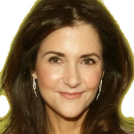

About
|
View code
Sorry, demo not available for mobile. Please visit with your PC.
Choose a "Style"
chris
hugh
marisol
ellen
evan
betsy
kenny
Loading Inference Models (~60MB)...
May take a minute on first load
